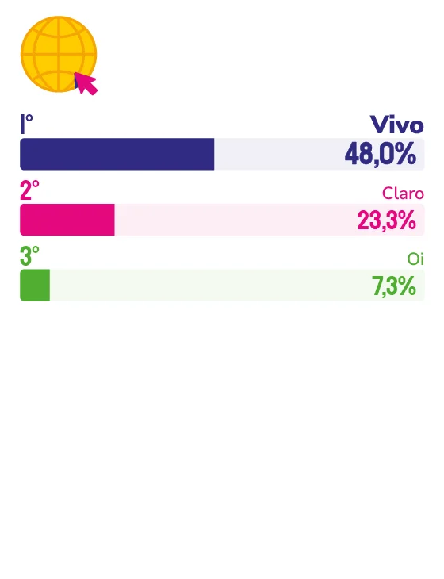

VIVO
Entre expansão de rede, novos serviços e campanhas sobre uso consciente da tecnologia, Vivo amplia sua atuação no dia a dia capixaba.
Com mais de 3 milhões de clientes no Espírito Santo e presença em quase 80 municípios – 37 deles já com tecnologia 5G –, a Vivo deixou de ser apenas uma operadora de telefonia e internet. Nos últimos anos, ampliou o portfólio para incluir serviços financeiros, saúde, entretenimento e bem-estar, ao mesmo tempo em que passou a discutir publicamente o próprio papel da tecnologia na vida das pessoas.
“A Vivo possui um ecossistema completo de soluções. Somos uma empresa de tecnologia, com soluções que vão muito além da conectividade (5G, Fibra, Pré, Pós, Controle, TV, Casa Inteligente), entregando também serviços financeiros (Vivo Pay), Entretenimento e Jornalismo (Terra), Saúde e Bem-estar (Atma e Vale Saúde Sempre), além de Acessórios (Ovvi e i2Go), entre outros produtos e serviços”, afirma o diretor comercial regional Leste – Espírito Santo e Rio de Janeiro da Vivo, Janderson Anciães.
Sobre o significado de ser lembrada espontaneamente pelos capixabas ao longo de tantas edições da pesquisa, o executivo destaca a relação de longo prazo. “Essa conquista reforça a relação que construímos com os consumidores, baseada em confiança, proximidade e relevância no dia a dia das pessoas. Estar na mente dos consumidores também é um reflexo da percepção positiva sobre a qualidade dos nossos serviços, a inovação constante e o compromisso em oferecer soluções e vivências que realmente façam diferença na vida dos nossos clientes.”
Janderson destaca ainda que, com mais de 26 anos de atuação no Brasil, a Vivo entende que sua relação com o público vai muito além de um único momento. “Esse vínculo foi construído continuamente, numa combinação de qualidade de produtos e serviços e conversas genuínas da marca com o público. Ainda assim, alguns movimentos foram especialmente relevantes, como a expansão da rede de fibra e da cobertura 5G no estado, além da evolução do nosso ecossistema digital e dos nossos canais de relacionamento.”
Destacam-se ainda a consolidação de iniciativas da marca que ampliam seu papel na sociedade, como a plataforma “Tem Tempo Pra Tudo”, que reforça uma visão mais equilibrada e consciente da tecnologia. A Vivo fortalece seu posicionamento a partir de diálogos sobre temas que realmente importam para as pessoas. Com essa iniciativa, a operadora promove reflexões sobre a relação com as telas e convida o público a rever seu tempo com o celular. Em fevereiro deste ano, por exemplo, foi lançada a campanha “Afogados”, aprofundando esse debate com uma abordagem mais direta e conectada ao cotidiano. Ao mesmo tempo, a empresa estimula experiências mais sensoriais, valorizando as relações humanas e reforçando seu papel como uma das principais apoiadoras do esporte e da cultura no Brasil.
No Espírito Santo, esse posicionamento aparece em iniciativas locais. “Falando especificamente do público capixaba, buscamos traduzir esse posicionamento em iniciativas que gerem experiências positivas e façam parte do dia a dia das pessoas. Um exemplo é o patrocínio à Track&Field Run Series. Em maio deste ano, a etapa realizada em Vitória contou com ativações de marca e benefícios exclusivos para clientes Vivo por meio do programa Vivo Valoriza, em que oferecemos descontos nas inscrições, ampliando o acesso à experiência. A iniciativa reforça atributos que fazem parte do posicionamento da marca, como bem-estar, qualidade de vida e a valorização das conexões humanas.”
Para os próximos anos, a prioridade segue sendo o Espírito Santo. “Seguiremos investindo de forma consistente no Espírito Santo, com foco na expansão da cobertura 5G, no fortalecimento da rede de fibra e na evolução da jornada digital dos clientes”, afirma Janderson.
Questionado sobre o que precisa e o que não pode mudar para a marca continuar sendo reconhecida como ícone daqui a 15 anos, o executivo afirma: “nosso compromisso com qualidade, a confiança construída com os clientes e o propósito de usar a tecnologia para aproximar pessoas é algo que continuará nos guiando. Esses pilares sustentam a nossa relevância hoje e continuarão sendo a base da nossa atuação no futuro”.

Janderson Anciães
Diretor comercial Regional Leste –
Espírito Santo e Rio de Janeiro da Vivo
“Hoje, temos mais de 3,7 milhões de clientes no estado, somos líderes em telefonia móvel, com 74% de market share, e estamos presentes em 78 municípios, sendo 37 deles já com tecnologia 5G. Na Fibra, temos 224 mil clientes, com 34% de market share. Além disso, hoje, contamos com 88 lojas e cerca de 3.800 pontos de recarga em todo o estado, ampliando a conveniência e a proximidade com os consumidores capixabas.”em educação na Grande Vitória.”
OPERADORA DE INTERNET
OPERADORA DE TELEFONIA
153
